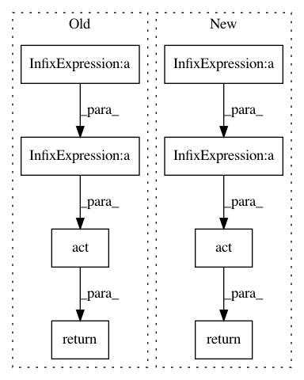

d5f47b3c3ba8afda509c36fbdc958d2b1ec25f7f,cube/models/vocoder.py,VocoderNetwork,forward,#VocoderNetwork#Any#,363
Before Change
out8 = self.net8(x)
out8 = out8.reshape(out8.size(0), out8.size(1) * out8.size(2))
return self.act(out1 + out2 + out3 + out4 + out5 + out6 + out7 + out8)
After Change
out8 = self.net8(x)
out8 = out8.reshape(out8.size(0), out8.size(1) * out8.size(2))
return self.act(out1 * self.net1w + out2 * self.net2w + out3 * self.net3w + out4 * self.net4w +
out5 * self.net5w + out6 * self.net6w + out7 * self.net7w + out8 * self.net8w)
In pattern: SUPERPATTERN
Frequency: 3
Non-data size: 8
Instances
Project Name: tiberiu44/TTS-Cube
Commit Name: d5f47b3c3ba8afda509c36fbdc958d2b1ec25f7f
Time: 2018-11-06
Author: boros@adobe.com
File Name: cube/models/vocoder.py
Class Name: VocoderNetwork
Method Name: forward
Project Name: rusty1s/pytorch_geometric
Commit Name: f4622e59a087d04bc0628b52c33f0cc9f296223e
Time: 2020-12-24
Author: matthias.fey@tu-dortmund.de
File Name: torch_geometric/nn/conv/film_conv.py
Class Name: FiLMConv
Method Name: message
Project Name: tiberiu44/TTS-Cube
Commit Name: 53a232c76c21caaf3bdf50e95c25e12a9af6f2ef
Time: 2018-11-10
Author: tibi@racai.ro
File Name: cube/models/vocoder.py
Class Name: VocoderNetwork
Method Name: forward